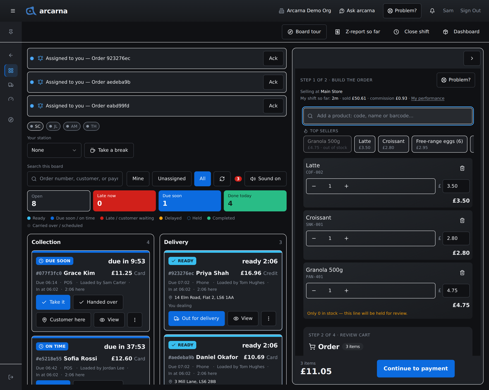
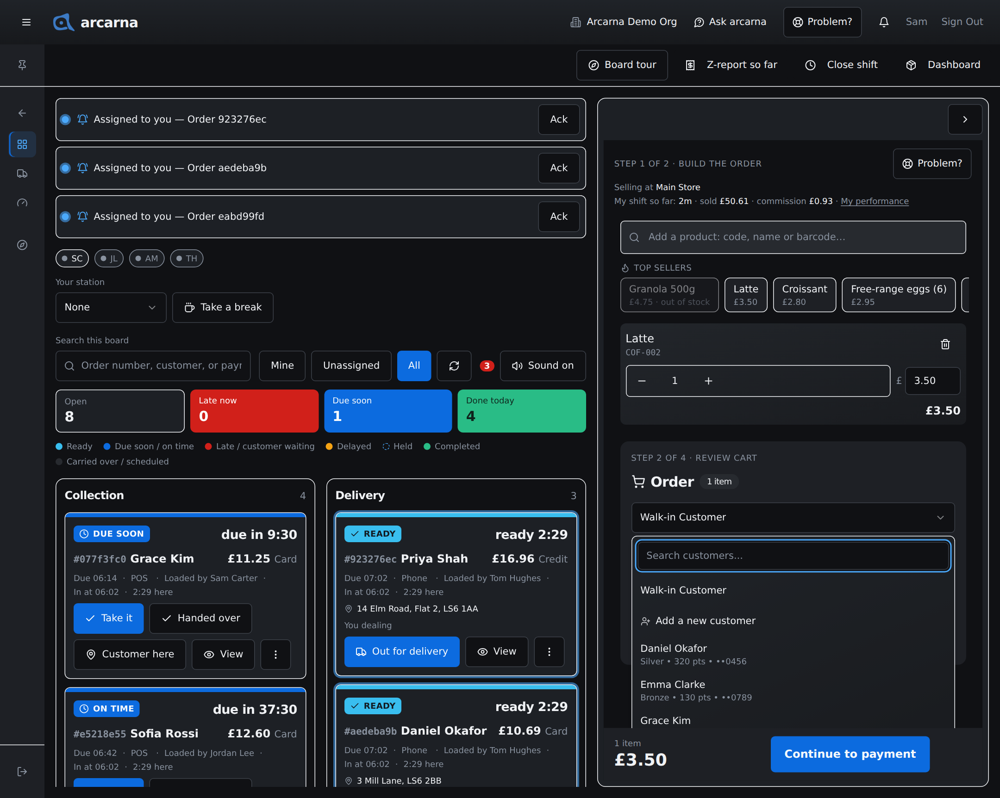
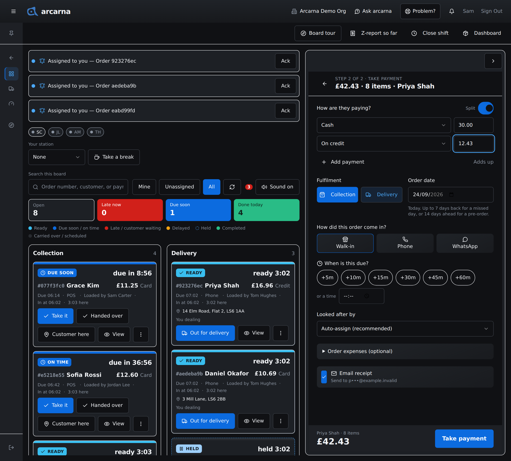
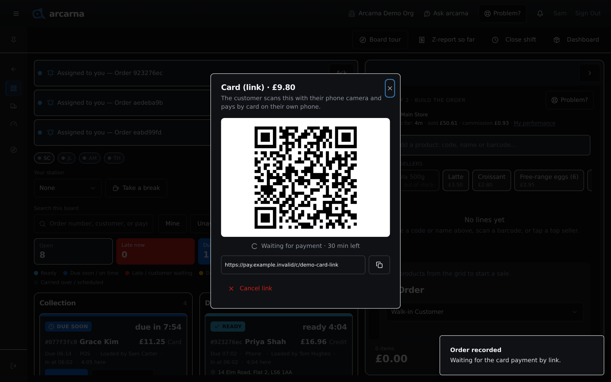
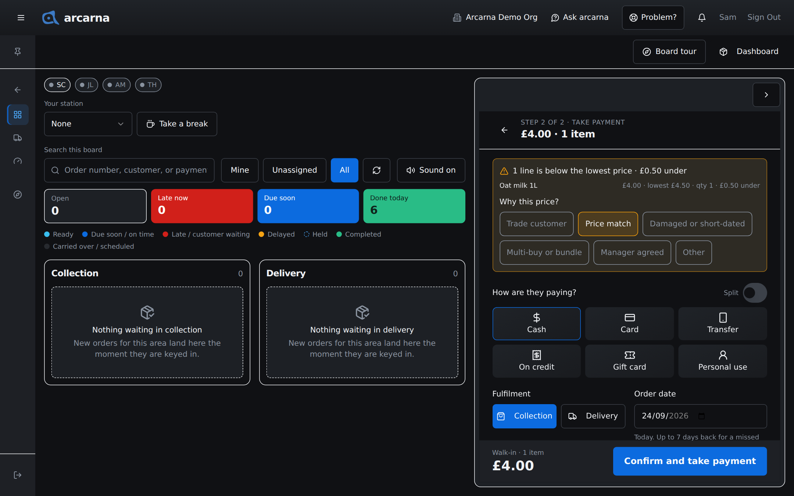

Staff training manual
Staff training manual
How to build an order, attach a customer, apply discounts and points, and take payment in every way arcarna allows, including split, on credit and Card (link).
What this screen is for
The till lives on the Operations board
The till is where you ring up what a customer is buying and record how they paid. In arcarna 1.2 it is not a page of its own: it is the New order pane of the Operations board, so you can take a sale without losing sight of the orders already waiting. Everyone who serves uses it: CASHIER MANAGER
- Open the menu, choose Operations Centre, then Operations board. Old links to the till or to Create Order open the same place.
- On a computer or tablet, the board fills the left and the order form sits on the right. The arrow button at the top of the form hides it when you only want the board, and brings it back.
- On a phone, the screen has two tabs: Board and New order. While you are on New order, a small number on the Board tab counts orders that have arrived since you started, so you know something is waiting without leaving the sale.

What you see above the order
| Line | What it tells you |
|---|---|
| Step 1 of 2 · Build the order | Where you are. Step 2 is the payment. The Problem? button sits beside it if something on the till goes wrong (see Section 1). |
| Selling at … | The location this sale will be recorded against, and whose stock it comes from. If it says No selling location is set up, stop and ask an admin before taking payment. |
| My shift so far | How long you have been on, what you have sold and the commission so far, with a link to My performance. It appears once your shift has its first sale, and only in shops that track cashier commission (Section 2). |
Step 1 · Build the order
Adding products
An order is a list of lines: one line per product, with a quantity and a price. You add lines from the search box, the top sellers or a barcode scanner.
- Type into the box that reads Add a product: code, name or barcode…. Matches appear underneath with their price and how many are in stock. Pick one, or use the arrow keys and press Enter.
- Or tap one of the Top sellers chips under the search box.
- Or scan the barcode. A short beep means it was added. A different tone and an Unknown barcode message mean nothing matched: add the item by name or code instead.
- Adding the same product again raises its quantity. You can also use the – and + buttons on the line, or type a number into the quantity box.
- To charge a different price on this sale, type over the figure in the line's price box. The line total updates when you leave the box.
- To take a line off, use the bin button on that line. Reducing its quantity to zero removes it too.
Step 1 · Who is buying
Attaching a customer
Every sale is either to a walk-in or to a named customer. Walk-in is the default and needs nothing. Attach a named customer when they collect loyalty points, want an email receipt, are buying on credit, or want a delivery to their saved address.
- Under the order lines, open the picker that reads Walk-in Customer.
- Type part of their name into Search customers... and pick them from the list. Each row shows their name, their category (Bronze, Silver, Gold or Platinum, set by a manager), points and a masked phone number.
- To find someone by phone, type their whole number. Only an exact match is found; part of a number finds nobody. If no one has it, the list says Nobody on the system has that number.
- Not on the system yet? Choose Add a new customer. Only the Name is needed; Phone (optional) and Email (optional) can be filled in later. Select Add customer and they are attached to the sale.
- If arcarna thinks they already exist, it asks, for example Use Priya S. (••4821). Choose that, or No, add new if it really is someone else.

If you are offline, a new customer cannot be added. Ring the sale through as a walk-in and add them once the connection is back.
Step 1 · Money off
Discounts, promotions and points
Discounts need a named customer. Once one is attached, three kinds of money off can apply, and each shows as its own line in the order summary.
| Kind | How it works at the till |
|---|---|
| Loyalty tier | A card under the customer shows their tier (for example Gold Member), their points and the tier's discount. The discount applies by itself. A bar shows how many points they need for the next tier. |
| Promo code | Type the code into Enter promo code... and select Apply. A valid code shows its name with a Remove button. If it cannot apply to this order, it says Not applied and why. |
| Points | Select Redeem points, type how many to use and select Apply discount. The button stays greyed out until the customer has the shop's minimum (it says how many are needed). The points' value comes off what the customer pays: £5 of points is £5 off. The shop sets what a point is worth; unless it has changed it, 100 points are worth £1, so 500 points take £5 off. |
Reading the order summary
| Line | What it means |
|---|---|
| Subtotal | The lines added up, before money off. |
| Loyalty (10%) | The tier discount, when there is one. |
| Promo: … | The promotion's name and what it took off. |
| VAT (20%) | Shown only when the shop charges VAT. A new shop starts at 0%, so this line may not appear at all. |
| Points redeemed (500) | Points spent on this sale. They come off after VAT. |
| Total | In bold. The amount the customer pays. |
| Earn … loyalty points | For a named customer, the points this sale will add. |
What the summary shows is exactly what arcarna records: the till and the server work out tier discounts, promotions and points the same way. When the order is right, select Continue to payment.
Step 2 · Take payment
The payment step
The lines slide away and the payment step takes their place. Its heading repeats the total, the number of items and the customer, so you can check them out loud. The arrow at the top left takes you back to the order without losing anything.

What each part of the payment step is for
| Part | What to do |
|---|---|
| How are they paying? | Tap one way of paying (see the table below), or switch on Split to take it in more than one way. |
| Fulfilment | Collection (the default) or Delivery. A delivery needs an Address and Postcode on the order before payment, with optional Notes for the driver. With a customer attached you can Use saved address, or tick Save as their address. Deliveries are covered in Section 5. |
| Order date | Today, unless you are keying in a missed sale (up to 7 days back, marked as entered late) or taking a pre-order (up to 14 days ahead). A pre-order needs a due time. |
| How did this order come in? | Walk-in, Phone or WhatsApp. |
| When is this due? | The time you promised: tap +5m to +60m, or type a time. Clear removes it. The board counts down to it. |
| Looked after by | Who deals with the order on the board. Leave it on Auto-assign (recommended) unless you are handing it to someone in particular. |
| Order expenses (optional) | Costs tied to this sale, such as shipping or packaging, so the profit figure stays honest. Pick a category, add a description and an amount, then Add. |
| Email receipt | Ticked for you when the customer has an email on file and has not opted out. Greyed out for a walk-in or anyone without an email. |
The button at the bottom changes with the way of paying, so it always says what will happen: Take payment for money taken now, Place order for a sale on credit, and Log personal use for personal use. Select it to finish. The form clears and is ready for the next customer.
The ways of paying
| Button | Use it when |
|---|---|
| Cash | Notes and coins into the drawer. |
| Card | The customer pays on the shop's card machine. |
| Card (link) | The customer pays by card on their own phone, from a QR code or link. Only shown once the owner has set it up. See below. |
| Transfer | A bank transfer. |
| On credit | Tick: the customer takes the goods now and pays later. Needs a named customer. |
| Gift card | Paid, in full or in part, from a gift card. |
| Personal use | Not a sale: stock taken for the shop's own use. See below. |
Payment · more than one way
Split payments
Use a split when a customer pays part one way and part another, for example £30.00 in cash and the rest on card. Each row is one payment, and together they must equal the total.
- Switch on Split beside How are they paying?. Two rows appear. The first is Cash; the second starts empty on purpose.
- For each row, choose how it was paid (Cash, Card, Card (link) when set up, Transfer or On credit) and type the amount.
- Need a third part? Select Add payment. A row can be taken away with Remove once there are more than two.
- Watch the figure under the rows: £12.50 left to take, £2.00 over, or Adds up. Only when it adds up will the sale go through.
Payment · tick
On credit (tick)
On credit means the customer takes the goods now and settles later. No money is taken, so the button reads Place order, not Take payment.
- A sale on credit, or a split with an On credit row, needs a named customer. Without one you will see Select a customer.
- What they owe is added to their tab. Cashiers do not see the Credit List; managers take repayments there (Section 8).
Payment · on the customer's phone
Card (link)
Card (link) lets a customer pay by card on their own phone: at the counter by scanning a QR code, or later from a link, which suits phone and WhatsApp orders. It only appears once the owner has connected Stripe. It can be the whole payment or one row of a split.
- Choose Card (link) and select Take payment. arcarna records the sale first, then shows a window headed Card (link) · £24.50 with a large QR code for exactly the amount due.
- The customer scans the QR code with their phone camera and pays on their phone. Under the code you will see Waiting for payment and how long the link has left.
- Not at the counter? Copy the link with the copy button, or select Send by WhatsApp when WhatsApp is set up and a customer is on the sale. It is sent to the number on file; you never see it.
- When Stripe confirms, the window says Paid £24.50 and the sale marks itself paid. Select Done.

| If… | Then |
|---|---|
| The customer cannot pay by link after all | Select Cancel link. The window asks how they will pay instead: Cash, Card or Transfer, or New card link to try again. |
| The link runs out | The same choice appears. A link at the counter lasts 30 minutes; for a phone or WhatsApp order it lasts 24 hours. |
| You close the window before they pay | The sale stays recorded and waits. Its card on the board shows Awaiting card payment; tap that to bring the QR code, the link and the other choices back. |
| You are offline | Card (link) needs a connection. Choose another way to pay. |
Payment · the rest
Gift cards and personal use
Gift card
- Choose Gift card, type the code into Enter 16-character code and select Check.
- The balance appears. Enter the Amount to apply.
- If the card does not cover the total, the Remaining due shows. Choose how the rest is paid: Cash, Card or Transfer.
Personal use
Personal use is for stock the shop uses itself, such as a staff lunch or damaged stock given to staff. It is not a sale.
- Choose Personal use.
- Say what it is for in What is this for?. A reason is required.
- Select Log personal use. The stock comes off, its cost goes on today's expenses, and a manager is told.
Prices · below the lowest price
Selling below an item's lowest price
Each product has a lowest price, its minimum. Until a manager sets one, it is the sale price. You are never stopped from selling below it: the customer in front of you always gets served. What you see depends on a switch an admin controls, the price guard.
| Price guard | What happens at the till |
|---|---|
| Off (how every shop starts) | Nothing is shown. The sale goes through as normal, and arcarna quietly records that it was below the lowest price. |
| On | One amber line appears under the order line, and at payment you pick a reason. The sale still goes through. |
When the price guard is on
- After you type a price and leave the box, a price below the minimum shows one amber line: Below the lowest price for this item (£4.50). You can still sell at this price; a manager will see it.
- If you typed a price far above the usual one, arcarna asks Did you mean £4.99? Tap the figure to use it. This catches a slipped decimal point.
- At payment, a panel at the top lists each line below its lowest price and how much under it is, then asks Why this price? Pick one: Trade customer, Price match, Damaged or short-dated, Multi-buy or bundle, Manager agreed or Other.
- For Manager agreed, choose which manager. They are asked to confirm, but the sale goes through either way. For Other, say what the reason is.
- Select Confirm and take payment (or Confirm and place order for a sale on credit).

After the sale
What arcarna records
Confirming saves one order against your shift: the lines and prices, any money off, the total, how it was paid, the customer (or walk-in), points earned or spent, and when it is due. Stock at your location drops. A short message confirms it, and the new order's card flashes on the board.
| Message | What it means |
|---|---|
| Order Placed | Done. If you gave no due time, the message offers Set a due time?, which promises 30 minutes (45 for a delivery). |
| Order On Hold | Recorded, but a line was short of stock, so the order is on hold for someone to sort out on the board. |
| Order recorded | A Card (link) sale: recorded and waiting for the customer to pay. |
| Sale saved on this till | No connection, or arcarna did not answer in time. The sale is kept on this device and sent by itself. It will only be recorded once. |
| Order failed | Nothing was recorded. Read the reason, put it right and try again. |
When the connection drops
The till keeps working offline
If the internet goes down mid-shift, keep serving. Each sale carries its own reference, so a sale sent twice after a slow connection is never recorded twice.
- A small pill in the bottom corner shows Offline, and how many sales are waiting or failed, for example Offline · 2 waiting.
- When the connection returns you will see Back online. Sending 2 saved sales.
- Card (link) and adding a new customer need a connection. Everything else works.
- You cannot sign out while sales are still unsent. arcarna shows Sales not sent yet with Try sending now and Stay signed in. If the connection stays down, leave the till signed in; the sales go by themselves once it is back.